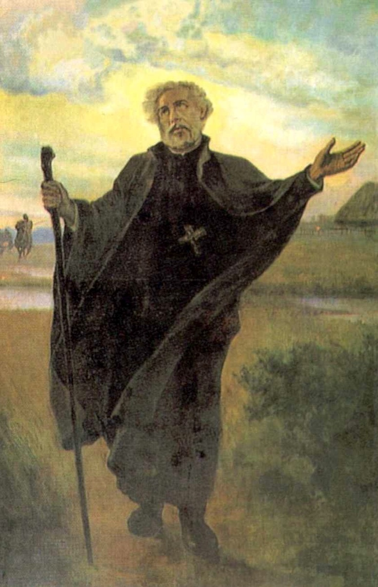

Misionari, pastiri i mistici (Pojedinačna proglašenja)
Svećenik · Misionar · Mučenik
Sv. Andrija Bobola
1591. – 1657.
Propovijedao je i obilazio seoske zajednice Poljsko-Litavske Unije u vremenu ratova i vjerskih sukoba. Njegovoj mučeničkoj smrti prethodila su desetljeća svećeničke službe, skrbi za bolesnike i ustrajne blizine ljudima.

Izvor slike
- Spomendan
- 16. svibnja
- Zaštitništvo
- Poljska (drugotni zaštitnik) · Crkveno jedinstvo (zagovor)
- Životni vijek
- 1591. – 1657.
- Slavi se
- 16. svibnja
Životopis
Sveti Andrija Bobola bio je isusovački svećenik i misionar čiji je život povezao gradsku pastvu, skrb za bolesnike i dugogodišnje obilaske seoskih zajednica. Djelovao je u Poljsko-Litavskoj Uniji, u krajevima koje su razdirali ratovi i vjerski sukobi. Njegova mučenička smrt 1657. ostala je najupečatljivijim događajem njegova životopisa, ali prethodila su joj desetljeća redovničke i svećeničke službe. U crkvenoj se predaji njegovo ime sačuvalo uz spomen neumorna propovijedanja i vjernosti ljudima koji nisu imali redovitu pastirsku skrb.
Rodio se 1591. u poljskoj plemićkoj obitelji. Kao njegovo se rodno mjesto najčešće navodi Strachocina, premda podrijetlo obitelji i točno mjesto rođenja nisu u svim životopisima jednako opisani. U mladosti je pohađao isusovačku školu u Braniewu. Susret s isusovačkim obrazovanjem prethodio je njegovu ulasku u Družbu Isusovu 1611. u Vilniusu, važnom gradu Velikoga Vojvodstva Litve. Ondje je započeo redovnički put koji će ga voditi od studija i zajedničkoga života do propovjedaonice, bolesničke postelje i udaljenih naselja Polesja.
Studirao je filozofiju i teologiju, a za svećenika je zaređen 1622. godine. Njegova priprava nije bila samo školska: pripadala je redovničkom životu molitve, poslušnosti i zajedničke službe. Nakon ređenja povjeravani su mu različiti poslovi. Bio je propovjednik, savjetnik i poglavar isusovačkih zajednica. Promjene mjesta i dužnosti obilježile su velik dio njegova života. Pozniji misionarski rad nije stoga započeo bez iskustva: već je poznavao i javno naviještanje vjere i odgovornost za svakodnevni život redovničke kuće.
U Vilniusu je djelovao pri crkvi svetoga Kazimira i vodio Marijinu kongregaciju. Uz propovijedanje, bila je to služba povezana s odgojem vjernika i njihova pobožnog života. U prikazu koji mu je poslije posvetio papa Pio XII. posebno mjesto imaju njegova euharistijska i marijanska pobožnost. Molio je pred tabernakulom, poučavao kršćanski nauk i pomagao potrebitima. Ti se oblici službe nadovezuju na njegov rad među okupljenim vjernicima: molitva i pouka pripadale su istom svećeničkom životu kao i propovijedanje.
Posebno mjesto u njegovu životu zauzima Bobrujsk, gdje je bio poglavar isusovačke zajednice. Za epidemije kuge pomagao je bolesnicima. Ratovi i oskudica dodatno su otežavali život stanovništva, a skrb za oboljele zahtijevala je osobnu prisutnost. Životopisna predaja uz njegovu odlučnost ističe i ugodnu narav u odnosima sa subraćom. Pio XII. njegovu duhovnu pripravu opisuje i kao rad na vlastitoj poniznosti. Redovnička izgradnja tako nije završila studijem i ređenjem, nego se nastavljala u odnosima sa subraćom i u povjerenim službama.
Značajan dio zrele dobi proveo je u seoskim misijama. Među središtima njegova djelovanja bili su Pinsk i Polock, na području današnje Bjelorusije. Osobito je povezan s Polesjem, prostranim krajem oko rijeke Pripjata, s močvarama, pješčanim predjelima i raspršenim naseljima. Putovao je od mjesta do mjesta, propovijedao, poučavao u vjeri i dijelio sakramente. Dolazak svećenika u takve zajednice nije bio samo prigoda za pojedino slavlje nego i mogućnost da vjernici prime pouku i obnovljenu potporu za crkveni život.
Upravo je zbog te pokretljive i ustrajne službe ostao poznat kao apostol Litve. Nazivi povezani s njegovim pridobivanjem ljudi za katoličku vjeru odražavaju i uspjeh njegova rada i protivljenje koje je izazivao. Njegovo se misionarenje odvijalo na području susreta latinskoga i istočnoga kršćanstva. U njemu su živjeli katolici, pravoslavni i vjernici istočnoga obreda povezani s Rimom nakon Brestske unije 1596. godine. Crkvena pripadnost bila je isprepletena s političkim i društvenim odnosima, a vjerski su sporovi često dobivali potporu oružanih sukoba.
Andrija je nastojao učvrstiti katoličke zajednice i njihovu povezanost s Rimom. Takvo ga je djelovanje izlagalo neprijateljstvu. U životopisima su sačuvani spomeni poruga i napada tijekom njegova misionarskog rada. Nisu svi koji su dijelili isti jezik, narodnost ili crkvenu pripadnost imali istu odgovornost za nasilje. Njegova se povijest odvijala među konkretnim zajednicama i u konkretnim ratnim okolnostima. Širenje sukoba otežavalo je putovanja i ugrožavalo stanovništvo, a svećenici su mogli postati osobito izložene mete zbog službe koju su obavljali.
Hmeljnicki ustanak, započet 1648., otvorio je razdoblje dugotrajnih ratova i razaranja. Slijedili su novi vojni pohodi i politička previranja koja su zahvatila velik dio Poljsko-Litavske Unije. U tom je ozračju Bobola nastavio djelovati među ljudima Polesja. U svibnju 1657. zarobili su ga Kozaci. Ubijen je 16. svibnja u Janówu Poleskom, današnjoj Ivanavi u Bjelorusiji. Njegova je smrt u Crkvi priznata kao mučeništvo: bio je izložen prisili da se odrekne katoličke vjere te je nakon odbijanja mučen i ubijen.
Kasniji opisi njegova stradanja donose različite pojedinosti i slijed događaja. Iza tih potresnih izvještaja ostaje temeljno svjedočanstvo svećenika koji je pod nasiljem ostao vjeran Kristu i svojoj crkvenoj pripadnosti. Crkva u njegovoj smrti prepoznaje završetak dugoga misionarskog predanja. U papinskom prikazu njegova služba uključuje i nastojanje oko pomirenja te obnove kršćanskoga života. Propovijedanje je bilo usmjereno na to da se vjera očituje u ponašanju, odnosima prema bližnjima i povratku sakramentalnom životu.
Njegovo je tijelo pokopano u isusovačkoj crkvi u Pinsku. Štovanje se poslije proširilo, a povijest relikvija povezala se s političkim promjenama u istočnoj Europi. Čuvane su i u Polocku, odakle su ih sovjetske vlasti 1922. odnijele u Moskvu. Zahvaljujući nastojanju Svete Stolice i isusovaca uključenih u pomoć gladnima, relikvije su 1923. predane papinskim predstavnicima i prenesene u Rim. Sljedeće su godine položene u crkvu Il Gesù, središnju crkvu Družbe Isusove.
Papa Pio IX. proglasio ga je blaženim 30. listopada 1853., a papa Pio XI. svetim 17. travnja 1938. Nakon kanonizacije njegove su relikvije vraćene u Poljsku. Na putu su ih vjernici častili u više europskih gradova, među ostalim u Ljubljani. U Varšavi su postale središtem trajne pobožnosti. Za Drugoga svjetskog rata, kada je grad proživljavao razaranje, čuvanje i premještanje relikvija bilo je povezano s vjernošću zajednice vlastitoj duhovnoj baštini. Danas se časte u varšavskom svetištu koje nosi njegovo ime.
Tristotu obljetnicu njegove smrti papa Pio XII. obilježio je 1957. enciklikom Invicti athletae posvećenom njegovu svjedočanstvu. Godine 2002. potvrđen je kao drugotni zaštitnik Poljske. Štuje se i kao zagovornik crkvenoga jedinstva, a njegov je spomendan 16. svibnja. Njegov život pripada bolnoj povijesti kršćanskih podjela, ali se njegovo štovanje povezuje s nadom u zajedništvo. U njemu ostaje živa uspomena na isusovca koji je propovijedao, njegovao bolesne i obilazio udaljene zajednice, a u času nasilja nije napustio vjeru kojoj je posvetio svoj život.